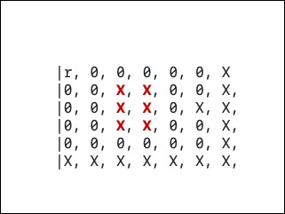
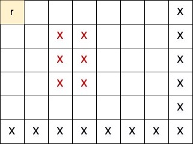
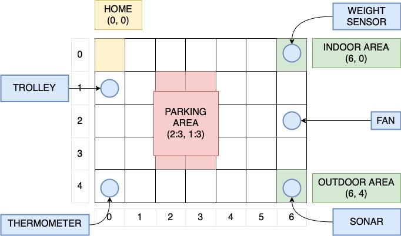
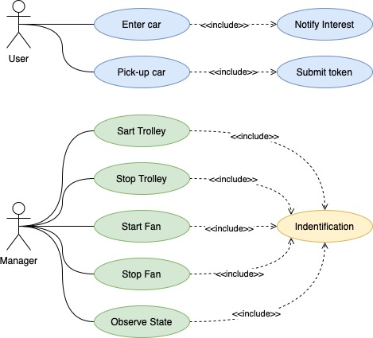

|

Map given by the customer
|

Map refactoring
|
|

Reserved areas by devices and parkign slots
|
|

Use case
|
User ActorEnter Car
Pick-up Car
Notify Interest
Submit Token
|
Manager ActorStart Trolley
Stop Trolley
Start Fan
Stop Fan
Observe State
Identification
|
Move to indoor-area
Move to slot parking in
Move to home
|
Move to outdoor-area
Move to slot parking out
|